PADARIA
PADARIA MIGALHAS AMIGÁVEIS
 PADARIA
PADARIA
Descubra a magia da nossa padaria artesanal
Na Our Artisan Bakery orgulhamo-nos de ser um refúgio para os amantes do pão e da pastelaria, onde a paixão pela tradição se funde com a inovação culinária. Nossos mestres padeiros aperfeiçoaram a arte de cozinhar e, todos os dias, nos esforçamos para criar produtos excepcionais usando ingredientes da mais alta qualidade e técnicas artesanais.
Ingredientes de qualidade
Nosso compromisso com a qualidade começa com a seleção de ingredientes premium. Utilizamos farinha integral orgânica, fermento natural, sal marinho e água pura para criar a base dos nossos pães. Adicionamos toques especiais, como linhaça dourada e sementes de chia, para dar aos nossos pães sabor e textura únicos. Nossos produtos são livres de conservantes e aditivos, garantindo sabor autêntico em cada mordida.
Sistema de fabricação de cerveja
Nossos padeiros especializados seguem um processo cuidadosamente monitorado para garantir o frescor e a qualidade de nossos produtos. Começamos por misturar e amassar a massa manualmente, permitindo que o fermento natural realce o sabor e a textura. Em seguida, os pães são deixados em repouso para uma fermentação lenta e controlada que melhora o seu sabor. Por fim, assamos cada lote em fornos de pedra, criando uma crosta crocante e dourada que retém a maciez e a umidade do interior.
Novas criações a caminho
Temos o prazer de partilhar que num futuro próximo iremos adicionar mais dois tipos de pão à nossa seleção, levando a inovação culinária a novos níveis. Estes pães serão cuidadosamente pensados para satisfazer os seus desejos e surpreendê-lo com sabores únicos que só encontrará na Nossa Padaria Artesanal. Fique atento às novidades e descubra a magia destes novos produtos!
 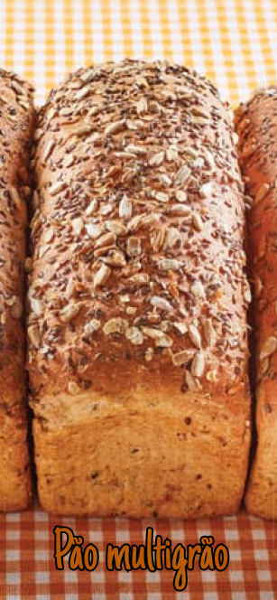
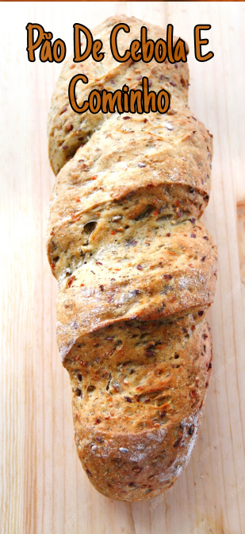
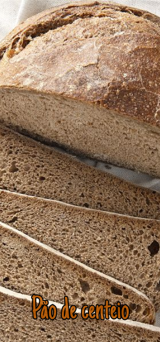
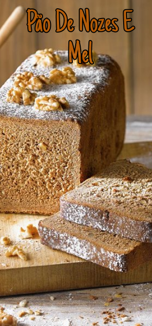
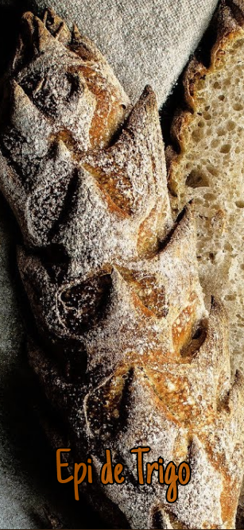
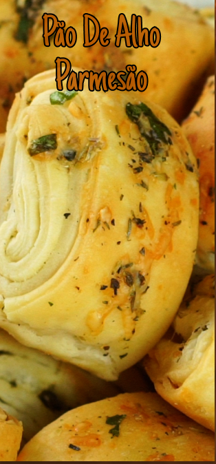
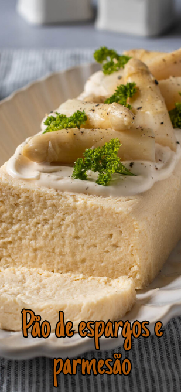
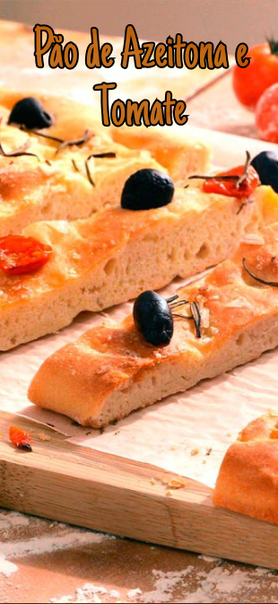
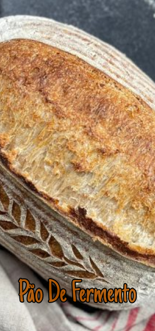
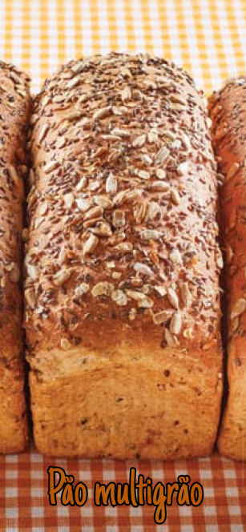
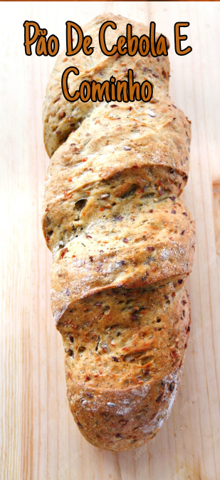
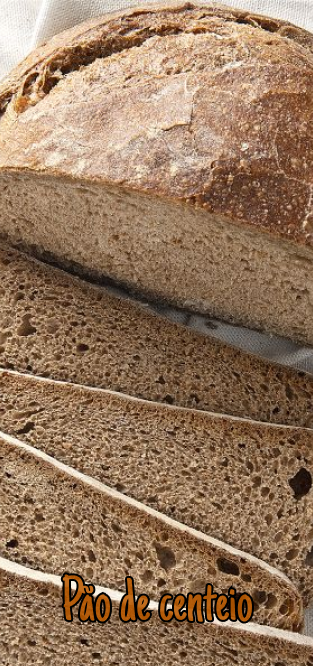
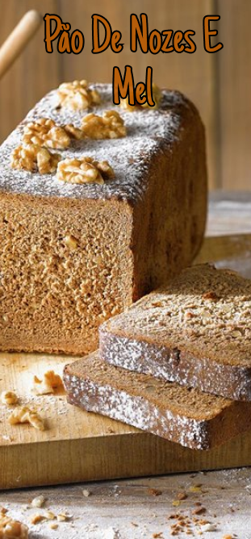
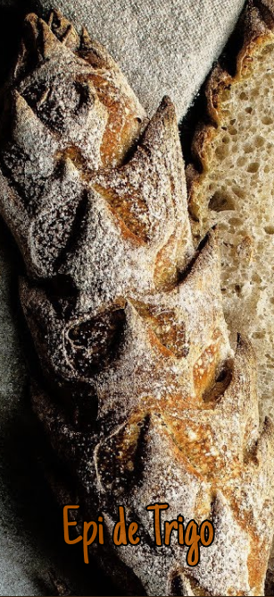
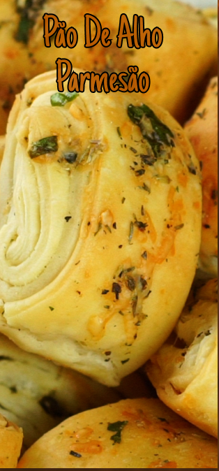
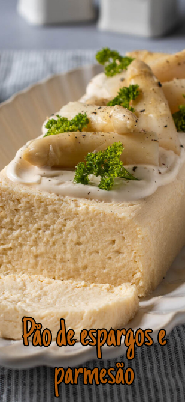
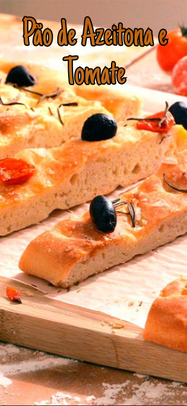
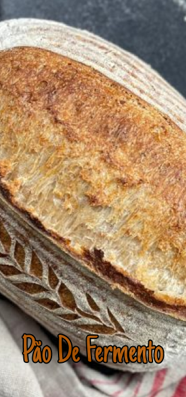
 Padaria
Padaria Doces
Doces Empanadas
Empanadas